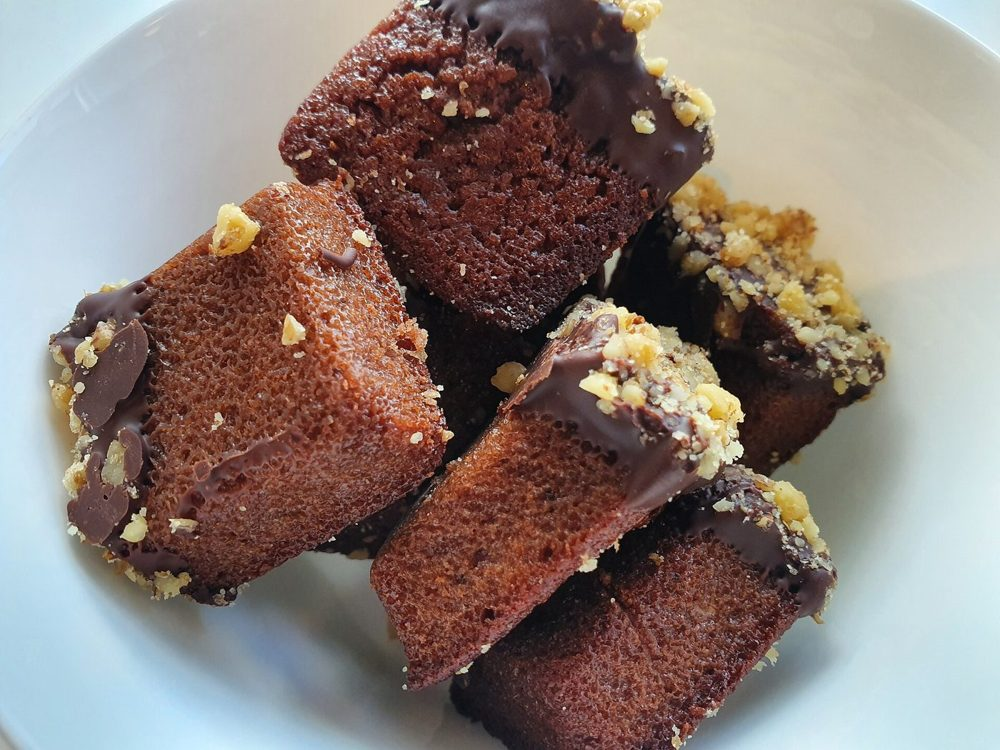
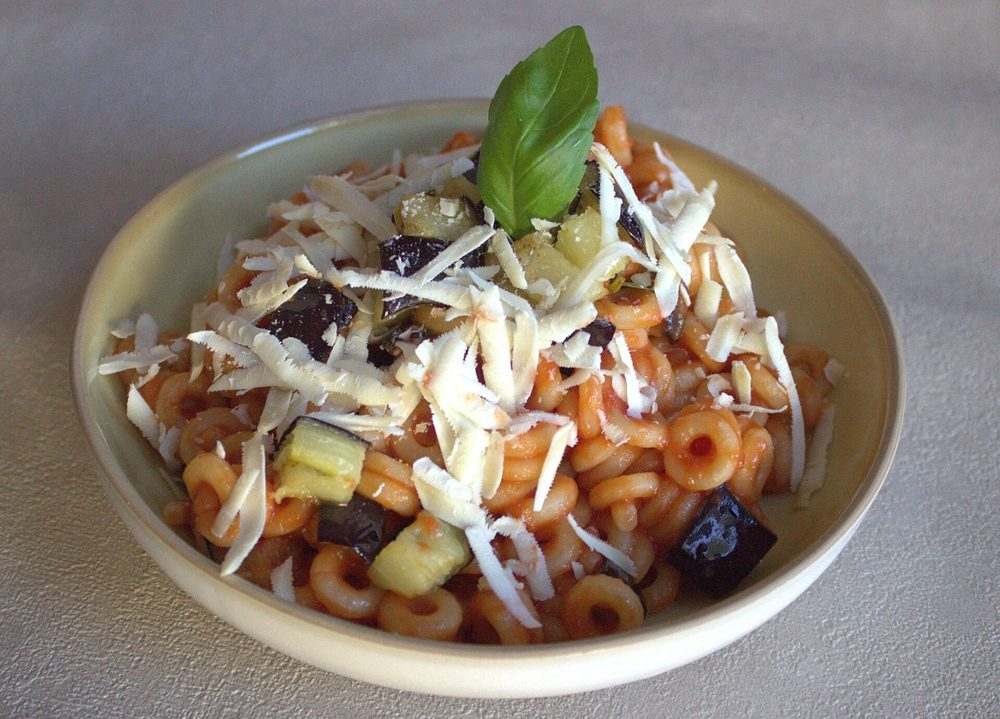

ABOUT
お店の由来と想い
店名の「シフォン」は、オーナーご夫婦の愛猫の名前から。ロゴや店内のモチーフにも猫が登場し、愛猫は「カフェの店長」として紹介されています。
ご主人は長年勤めた電機メーカーを退職し、奥さまの夢だったカフェを2024年7月にオープン。海外でホームパーティーを開いて友人をもてなしてきた経験が、料理好きの原点だそうです。「地域の人たちの憩いの場にしていきたい」という想いが語られています。
- レモン色の外壁と三角屋根、木をふんだんに使った天井の高い店内
- 自家栽培の野菜を使い、味も見た目も大切にした食事
- ご主人がお料理、奥さまがスイーツを担当

上記は松本経済新聞・地域情報サイトの取材記事で確認できた内容です。
MENU
お店で味わえるもの
夜は予約制でご利用いただける旨がInstagramで案内されています。時間・価格・日替わりの内容は準備中です。






VOICE
口コミ(イメージ例)
イメージ例小鉢がたくさんで、ゆっくり食べられるランチでした。
イメージ例レモン色の外壁が目印で、すぐ分かりました。ケーキもおいしかったです。
イメージ例気取らず入れて、家族みんなでくつろげました。
上の3件は制作側が作成したイメージ例で、実際のお客様の声ではありません。